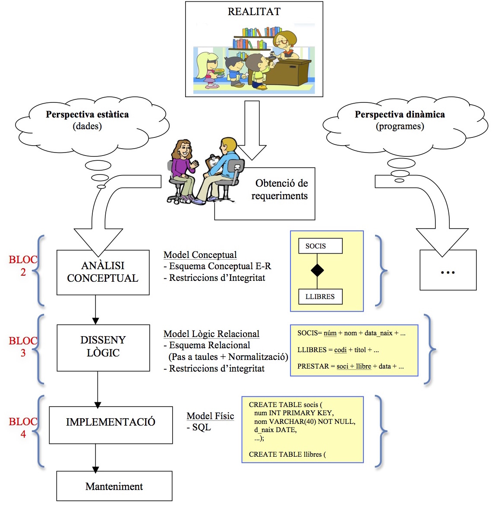

5. Sistemes d'Informació (SI)
5.1 La informació
La informació és un recurs fonamental. La investigació, la planificació i la presa de decisions exigeixen una informació de qualitat.
Criteris de qualitat de la informació:
- Precisa: que no tinga inexactituds.
- Oportuna: que es pose a disposició de l’usuari com més prompte millor.
- Completa: que no falte res important.
- Significativa: que siga útil i comprensible.
- Coherent: que no tinga contradiccions. Que tinga integritat.
- Segura: ha d'estar protegida pel que fa a la seua pèrdua o a accessos no autoritzats.
5.2 Els Sistemes d’Informació
És un conjunt d'elements relacionats entre sí que aporten a l'organització la informació necessària per a complir els seus fins.
El SI d’una organització ha de prendre les dades de l'entorn (la pròpia organització així com fonts externes) i ha de produir com a resultat la informació que esta organització necessita per a la seua gestió i presa de decisions.
5.3 Els Sistemes d’Informació Informàtics
Un sistema d’informació informàtic és un SI en suport informàtic.
Components d’un SI informàtic:
Components lògics: programari o software (SW).
- Programes: tant aplicacions finals com el propi Sistema Gestor de Bases de Dades (SGBD).
- Informació: les dades i la seua descripció
Components físics: maquinari o hardware (HW).
- HW: Discos, cables, routers...
Components humans:
- L'administrador: ha d’assegurar la qualitat i permetre l'ús correcte i permanent de les dades.
- Els usuaris finals: introdueixen les dades, les modifiquen i les consulten.
Evolució dels SI informàtics:
- Tradicionals: estaven basats en l’ús de fitxers, amb els inconvenients ja explicats.
- Actuals: basats en l'ús de bases de dades, com a solució als problemes dels fitxers.
Activitat d'omplir buits
Llegeix el paràgraf seguit i completa les paraules que manquen. .
Qüestió Veritat/Mentida
Realimentació
Mentida
Realimentació
Mentida
Realimentació
Veritat
Realimentació
Mentida
Realimentació
Veritat
5.4 Cicle de vida dels S.I. Informàtics
La vida de tota aplicació informàtica des de que es crea s’anomena “Cicle de vida”, el qual consta de diferents fases que cal seguir, des dos perspectives: l’estàtica (dades) i la dinàmica (programes).
En esta assignatura només vorem la perspectiva estàtica: la de les dades. Vegem gràficament esta part del cicle de vida amb un exemple sobre la gestió d’una biblioteca:

Fase 1: Obtenció de requeriments / Anàlisi de requeriments
Consisteix en investigar quines són les dades que necessita una organització per a poder funcionar i les relacions entre elles. Això s’ha de fer amb entrevistes amb els possibles usuaris, etc.
Fase 2: Anàlisi Conceptual / Disseny Conceptual / Modelització
Consiteix en obtindre un esquema que represente les dades i les seues relacions que s’han obtés en la fase anterior. Este esquema s’anomena Esquema Conceptual. Hi ha moltes formes de fer-lo, però usarem la més coneguda, que és l’esquema Entitat-Relació (E-R). Aquells requeriments que no s’han pogut captar en eixe esquema, els anotarem apart, en el que s’anomena: Restriccions d’Integritat.
Fase 3: Disseny / Disseny lògic / Disseny relacional
Una vegada ja sabem quin SGBD usarem (PostgreSQL, MySQL...), cal traduir l’esquema de la fase anterior en un altre que s’acoste més a la implementació. Este esquema s’anomena Esquema Lògic. Hi ha diverses formes (models) d’obtindre estos esquemes, però usarem el més conegut, que és el Model Relacional (també hi ha el model jeràrquic i model en xarxa). A partir de l’esquema E-R i les Restriccions d’Integritat de la fase anterior obtindrem un Esquema Relacional. Allò que no es puga expressar en eixe esquema ho anotarem en altres Restriccions d’Integritat.
Fase 4: Implementació / Disseny físic
A partir de l’Esquema Relacional i les Restriccions d’Integritat de la fase anterior obtenim l’esquema físic de la BD: les instruccions SQL que permetran crear les estructures on es guardaran les dades que necessita l’organització. Aquelles RI que no es puguen expressar en SQL s’hauran de controlar en la part dels programes.
Fase 5: Manteniment
Una vegada ja està en funcionament la BD en l’organització, al llarg del temps eixiran aspectes a millorar o a adaptar a noves circumstàncies. Este fet farà tornar a alguna de les fases anteriors i continuar amb el cicle de vida.
En este mòdul tractarem les fases d'anàlisi, disseny i implementació de BD (blocs 2 a 4).
Llicenciat sota la Llicència Creative Commons Reconeixement NoComercial CompartirIgual 4.0